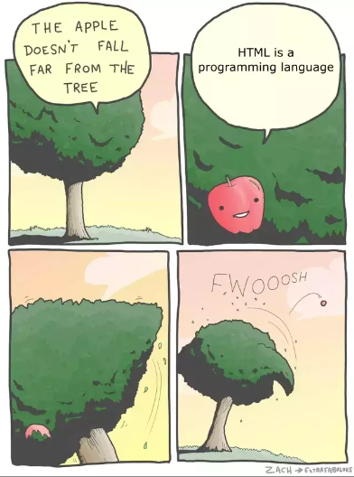

Truth be told, nah, I'm just like you: I put my pants on one leg at a time.
(Except when *I'm* done, I make HTML webpages full of teenage humor.)
Okay, what's next in the webpage agenda?
You're absolutely right. It's never not a good time for a meme (or two).
..........Perspective is everything, eh?
For our next course, we have a vintage youtube clip embedded into the webpage:
Poignant, I know. Something, something, "method to my madness," something, something.
So, at this point, you're probably thinking to yourself,
"I have got to meet this guy.
He's talented...
Funny...
And he *obviously* has a lot of spare time on his hands."
(Okay, um, rude, but you'll get few arguments from me.)
So here's what I'll do.
I know there are common-sense rules about giving internet strangers your information.
But I'll put those aside and tell you where I live.
But you have to promise you won't judge me, okay?
Keep scrolling...
Just a bit farter...
You ready?
Promise you won't laugh?
THANKS FOR VISITING!
Copyright 2023
Anthony A. Anthony, Inc.
69 420th Avenue
Middelfart 5500, Denmark